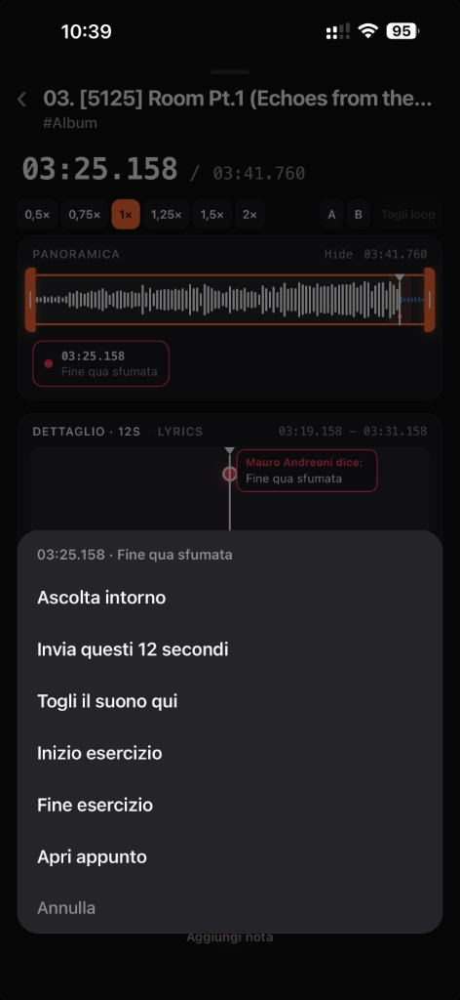
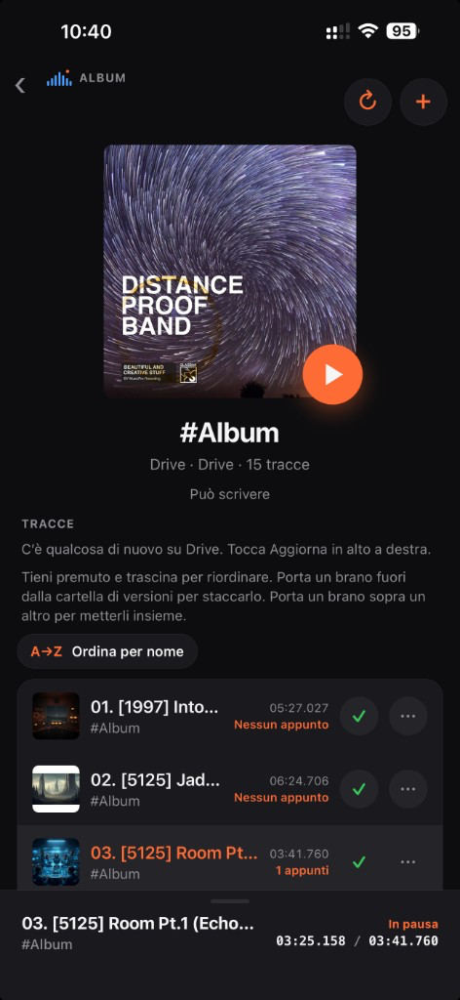
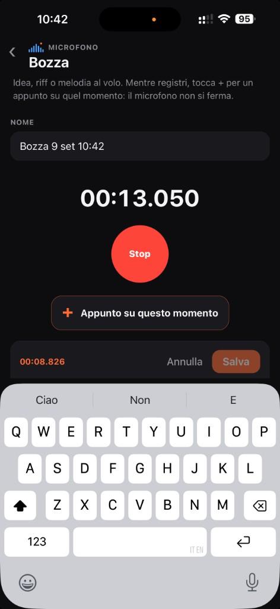
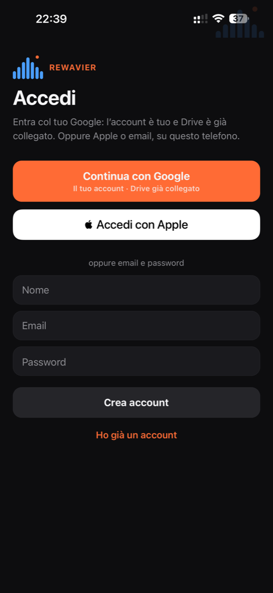
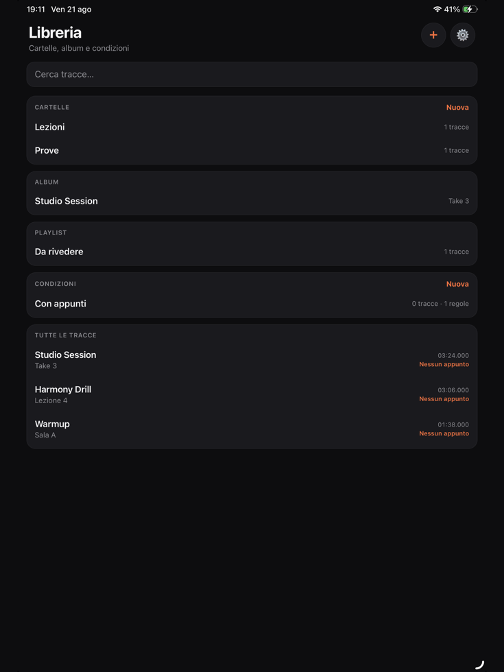

Carica o registra
Metti in libreria un file dal telefono, oppure registra una bozza: idea, riff o melodia al volo.
Per iPhone e iPad
Ascolti. Tocchi +. L’audio va in pausa e si apre un fumetto con l’orario preciso. Scrivi cosa succede in quel punto. Il segnalino resta sull’onda.
Non è un social e non è un programma da studio. È un taccuino attaccato alla linea del tempo dell’audio.
Metti in libreria un file dal telefono, oppure registra una bozza: idea, riff o melodia al volo.
Quando senti il punto da segnare, tocca il pulsante arancione. La traccia si ferma da sola.
Nel fumetto c’è già l’orario. Scrivi l’errore, l’accordo o l’idea. Il segnalino resta sull’onda.
Creator, band, lezione o lavoro: riunioni, formazione e appunti. Stesso gesto: ascolti e segni il momento.
Riascolti un take e segni dove sbagli, dove entra il basso, dove il mix si sporca.
Aprite lo stesso album da una cartella Drive. All’apertura arrivano brani e note di chi la condivide.
Lezioni in cartelle. Un appunto sul passaggio, con l’orario già scritto.
Riunioni, meeting, corsi, formazione, colloqui o appunti vocali. Ascolti e segni il momento da ricordare.
Oltre all’appunto sul tempo, queste cose le fai già oggi.
Due maniglie sull’onda. Le sposti e riascolti solo quel pezzo, finché vuoi.
Idea, riff o melodia al volo. Mentre registri puoi già segnare un momento: il microfono non si ferma.
Entri con Google e apri una cartella condivisa. All’apertura arrivano audio e note dei compagni.
Tocchi la freccia verso il basso e il brano resta sul telefono, pronto da ascoltare.
Il player resta pulito: titolo, tempo, forma d’onda, controlli e il + arancione. Il resto sta in libreria.





iPhone e iPad
Carichi un brano o registri una bozza, tocchi la traccia, poi + per un appunto.